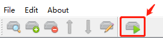

点灯
本实例的过程
新建工程 -> 添加源代码文件 -> 添加时序、引脚约束 -> 综合 -> 烧录
在看这篇文档前，请再次确定自己看过Gowin云源软件用户指南，第5章 云源软件使用
本实验的源码地址：https://github.com/sipeed/Tang-Nano-examples/tree/master/example_led
Verilog 预备知识
这里只介绍接下来会用到的相关语法，更多的可以参考《Verilog 数字系统设计教程》
Verilog 的基本设计单元是模块，每个 Verilog 程序包括 4个 主要部分：端口定义、I/O说明、内部信号声明和功能定义
模块就像我们平时提到的黑匣子，当我们实现了模块后，就不需要去关心模块内部，只需要根据模块定义的输入输出格式，将模块实例化，给模块提供输入，就可以让模块自己工作了
一个模块长成这样
module block (input a, output b);
reg [width-1:0] R_1;
assign b = a;
always @(posedge clk or negedge reset_n)
begin
// do something
end
endmodule
模块整体结构由 module 和 endmodule 组成，module 后面跟着的是模块接口的定义，声明了端口的方向是输入还是输出
模块内部有时候会使用内部的信号，内部信号有 wire 和 reg 类型
功能的定义可以通过 assign 和 always块 完成。 assign 是描述组合逻辑最常用的方法之一； always 可用于描述组合逻辑，也可描述时序逻辑
引脚使用情况
板载的是一颗三色 RGB 灯，原理图如下

整个程序使用到的引脚分布如下
| port | I/O | pin | desc |
|---|---|---|---|
| sys_clk | input | 35 | 时钟输入脚 |
| sys_rst_n | input | 15 | 系统复位脚 |
| led[0] | output | 16 | 绿灯 |
| led[1] | output | 17 | 蓝灯 |
| led[2] | output | 18 | 红灯 |
程序设计
本系统时钟为 24Mhz，一个机器周期为 1/24M s，也就是说每过 12000000 个时钟周期为 0.5s
在程序中通过 counter 计算 12000000 个时钟周期，实现 0.5s 的等待，等时间到了之后将 counter 置 0，并改变 LED 的颜色
module led (
input sys_clk, // clk input
input sys_rst_n, // reset input
output reg [2:0] led // 110 G, 101 R, 011 B
);
reg [23:0] counter;
always @(posedge sys_clk or negedge sys_rst_n) begin
if (!sys_rst_n)
counter <= 24'd0;
else if (counter < 24'd1200_0000) // 0.5s delay
counter <= counter + 1;
else
counter <= 24'd0;
end
always @(posedge sys_clk or negedge sys_rst_n) begin
if (!sys_rst_n)
led <= 3'b110;
else if (counter == 24'd1200_0000) // 0.5s delay
led[2:0] <= {led[1:0],led[2]};
else
led <= led;
end
endmodule
引脚约束
要想让 fpga 实现代码的功能，还需要将代码中涉及的引脚操作约束到 fpga 实际的引脚上。
- 进行引脚约束操作前需要向进行一次综合，即双击 process 页面的 Synthesize
接着就可以进行管脚约束了。在左边的工作区点击 process，然后双击 FloorPlanner

在工程中第一次点击，可能会提示说创建文件，点击确定即可
在弹出窗口中，切换到 Package View ，将 Ports 下的端口拖到 fpga 对应的引脚上，保存即可，如下图

布局布线
在左侧的工作区中，右键 Place&Route 时，会有 run 的选项，点击即可
烧录到开发板
有两种选择，一种是烧录到 sram 中，一种是烧录到 flash 中
烧录到 sram 中比较快，但是掉电后 fpga 中就没有固件了；烧录到 flash 中可以在系统掉电后保存之前烧录的固件
烧录是通过 Programer 完成的
双击左侧工作区的 Program Device 就可以打开 Programer

不过在使用 Programer 前需要注意，要在 Synthesize 和 Place&Route 都完成后才能使用 Programer ，否则软件会报错 Bitstream file dose not exists

Linux 用户需要注意
Linux 安装包中的编程器适用于 Linux 版本 Red Hat 5.10，如需 Red Hat 6/7 版本的编程器，请到官网上下载安装后，将安装包替换为 Gowin 云源软件安装包中的文件夹“Programmer”。
更改烧录位置
要选择固件烧录的位置，可以在选中芯片的情况下，点击 Edit -> Configure Device

在弹出窗口中选择自己需要烧录到的位置，这里选择的是 flash ，默认烧录位置是 sram

烧录
在选择好烧录位置后，就可以烧录固件了，点击菜单栏的烧录即可
